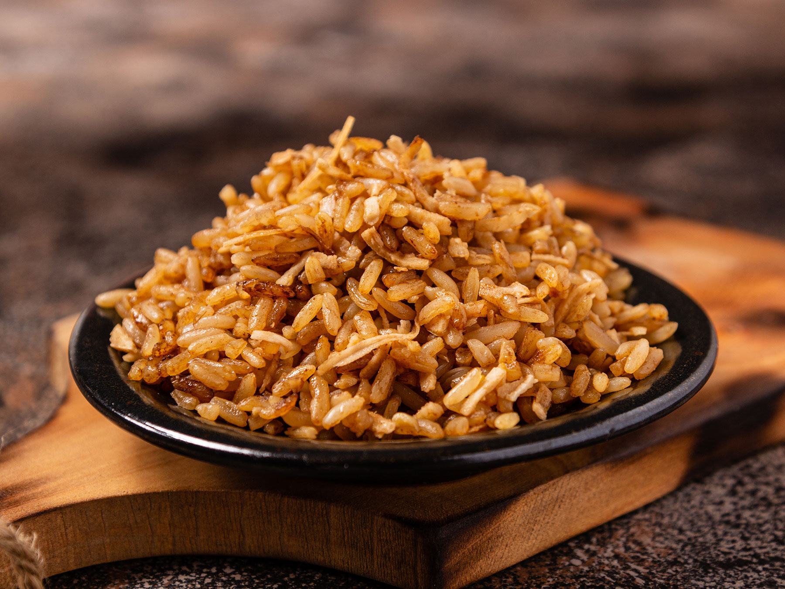

El arroz con coco es un plato típico de la gastronomía de la región Caribe de Colombia. Es el acompañante perfecto de los mariscos y el pescado, y es infaltable en la mesa costeña. Te comparto una receta fácil para deleitar a tu familia en casa.
Personas: 6
Tiempo de preparación: 45 min
INGREDIENTES
Ralla el coco y extrae la leche exprimiéndolo con un poco de agua tibia. Reserva la leche de coco obtenida. Si prefieres, puedes usar leche de coco de lata.
En una olla a fuego medio, calienta el aceite y agrega el coco rallado seco junto con el azúcar. Revuelve constantemente hasta que el coco tome un color dorado y caramelizado, conocido como titoté.
Agrega la leche de coco, el agua y la sal a la olla con el titoté. Lleva a fuego alto hasta que hierva. Incorpora el arroz y las uvas pasas si las usas, revuelve bien.
Cuando el agua se haya absorbido casi por completo, baja el fuego al mínimo, tapa la olla y deja cocinar por 20 minutos hasta que el arroz esté seco y en su punto. Sirve como acompañante de pescado o mariscos.